文本
试题
题尾
卷尾
其他
页面布局

级别 | 考点和演练 | 题型 | 考查内容 |
1级 | 双缝干涉 | 选择题 | 干涉条纹间距公式 |
2级 | 测可见光的波长 | 实验题 | 利用双缝干涉测量光的波长 |
3级 | 薄膜干涉 | 选择题 | 薄膜干涉现象及原理 |
4级 | 光的衍射 | 选择题 | 光的衍射现象及原理 |
5级 | 偏振现象 | 选择题 | 偏振现象及原理 |
6级 | 光学现象辨析 | 选择题 | 生活中的光学现象 |

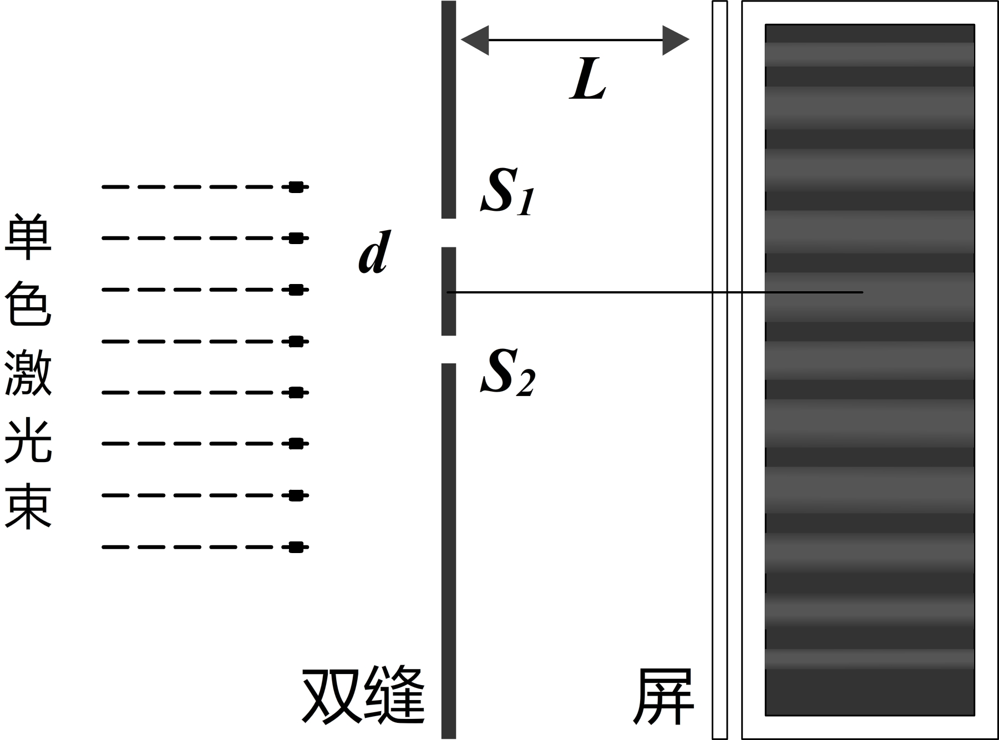
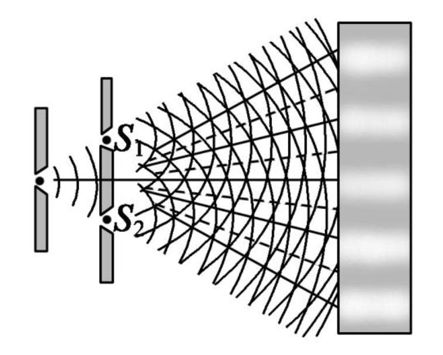


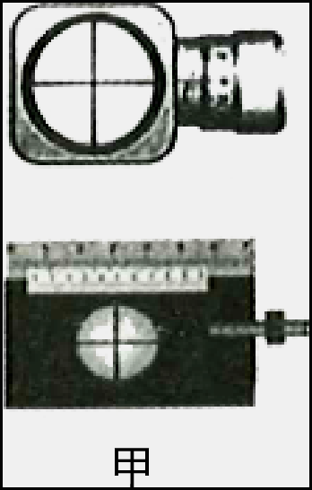
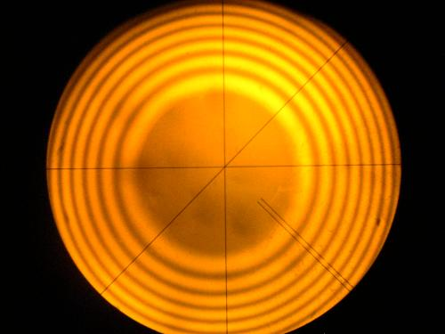

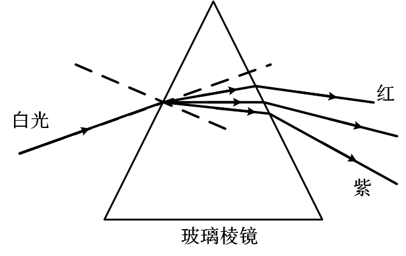
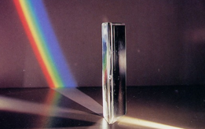

图1是研究光的干涉现象的装置示意图，在光屏P上观察到的图样如图2所示．为了增大条纹间的距离，下列做法正确的是（ ）
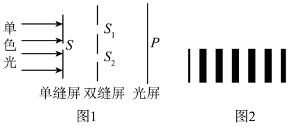

如图所示的双缝干涉实验，在光屏上可以观察到光的干涉条纹。下列操作可以使干涉条纹间距变大的是（ ）
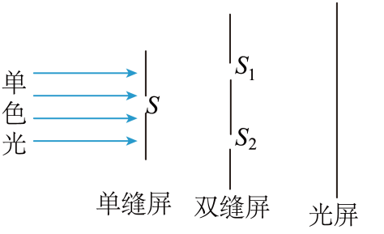
单色光a、b分别经过同一装置形成的干涉图样如图所示。下列说法正确的是（ ）
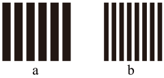
双缝干涉实验装置如图所示，调整实验装置使得像屏上可以见到清晰的干涉条纹．关于干涉条纹的情况，下列叙述正确的是（ ）
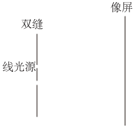
若将像屏向右平移一小段距离，屏上仍有清晰的干涉条纹
若将像屏向左平移一小段距离，屏上的干涉条纹将不会发生变化
若将像屏向上平移一小段距离，屏上仍有清晰的干涉条纹
若将像屏向上平移一小段距离，屏上的干涉条纹将不会发生变化
我们用如图所示的装置来做“用双缝干涉测量光的波长”的实验．
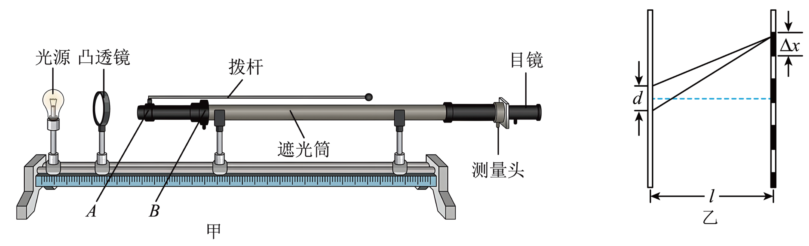
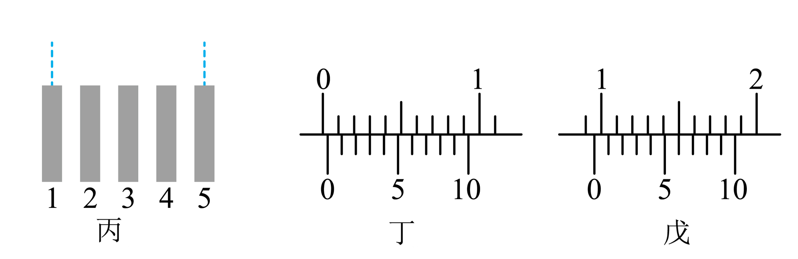
关于该实验，下列说法正确的是 。
A处为双缝、B处为单缝，滤光片在光源和凸透镜之间
A处为单缝、B处为双缝、滤光片在凸透镜和A之间
调节单缝与双缝的位置，并使单缝与双缝相互平行
测量某条干涉亮纹位置时，应使测微目镜分划板中心刻线与该亮纹的某一侧边缘对齐
关于实验现象，下列说法正确的是 。
如果将光源换成激光光源，去掉单缝，该实验照样可以完成
若仅挡住双缝中的一条缝，屏上的条纹就会全部消失
若只将滤光片去掉，屏上出现彩色衍射条纹，中央是白色亮纹
若仅换成长度更小的遮光筒可以增加从目镜中观察到的条纹个数
已知双缝间距离d=0.20mm，双缝到毛玻璃屏间的距离为l=75.0cm，如图乙所示，实验时先转动测量头上的手轮，使与游标卡尺相连的分划线对准图丙所示的第1条明条纹，此时卡尺的主尺和游标的位置如图丁所示，然后再转动手轮，使与游标卡尺相连的分划线向右边移动，直到对准第5条明条纹，如图丙所示，此时卡尺的主尺和游标的位置如图戊所示，则戊图游标卡尺上的读数 mm．由以上已知数据和测量数据，则该单色光的波长是 m（此计算结果保留3位有效数字）．
某同学用如图所示的实验装置观察光的干涉现象．他使用绿色的滤光片，在目镜中观察到了一定数量的绿色条纹．若要增加从目镜中观察到的条纹个数，以下措施可行的是（ ）
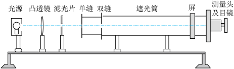
减小单缝到双缝的距离
换用间距更大的双缝
换用更长的遮光筒
换用蓝色的滤光片
若在屏上观察到的干涉条纹如图
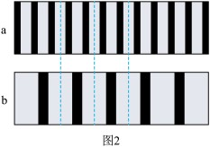
已知双缝间距离
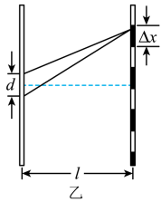
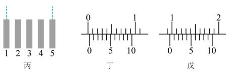
用平行单色光垂直照射一层透明薄膜，观察到如图所示明暗相间的干涉条纹。下列关于该区域薄膜厚度d随坐标x的变化图像，可能正确的是（ ）
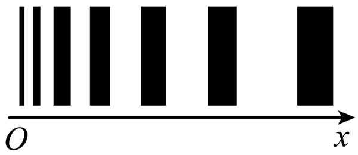
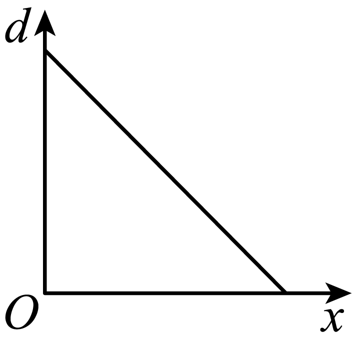
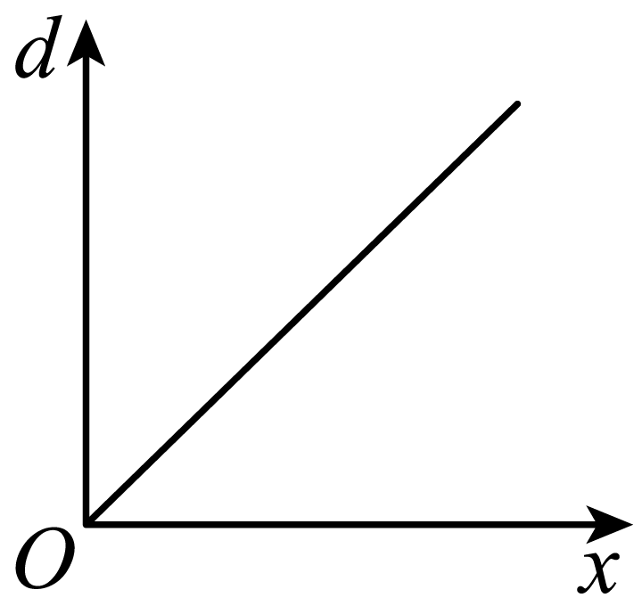
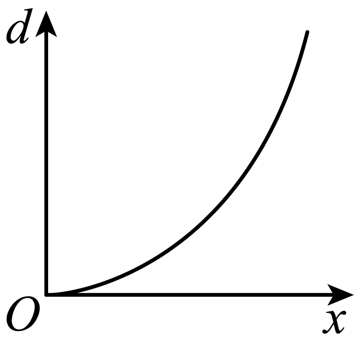
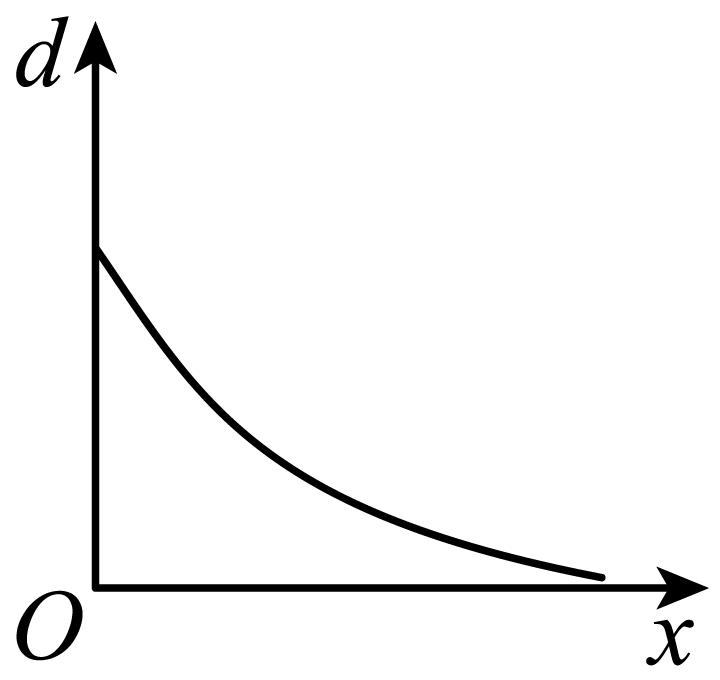
把铁丝圈放在肥皂水中蘸一下，让它挂上一层薄薄的液膜，竖直放置时，把这层液膜当作一个平面镜，用它观察灯焰，可以观察到上疏下密的彩色条纹，下列说法正确的是（ ）
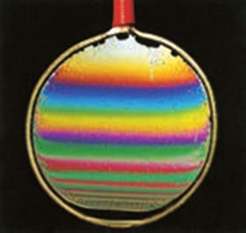
肥皂膜从形成到破裂，条纹的宽度和间距不会发生变化
肥皂膜上的条纹是前表面反射光与折射光形成的干涉条纹
肥皂膜上的条纹是前后表面反射光形成的干涉条纹
将铁丝圈右侧的把柄向上转动90°，条纹也会跟着转动90°
如图所示，利用单色光照射透明标准板来检查平面N的上表面的平滑情况，观察到现象如图乙所示的条纹中的A和B的情况，这说明（ ）
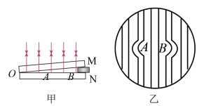
N的上表面A处向上凸起
N的上表面B处向上凸起
N的上表面A处向下凹陷
N的上表面B处向下凹陷
某种手机防窥膜由透明介质和对光完全吸收的屏障构成，如图所示，屏障垂直于屏幕平行排列，可实现对像素单元可视角度
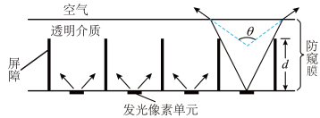
防窥膜实现防窥效果主要是靠光的全反射
其他条件不变时，透明介质的折射率越小，可视角度
可视角度
从上往下看，看到的图像比发光像素单元位置低
用如图1所示装置做圆孔衍射实验，在屏上得到的衍射图样如图2所示，实验发现，光绕过孔的边缘，传播到了相当大的范围。下列说法正确的是（ ）
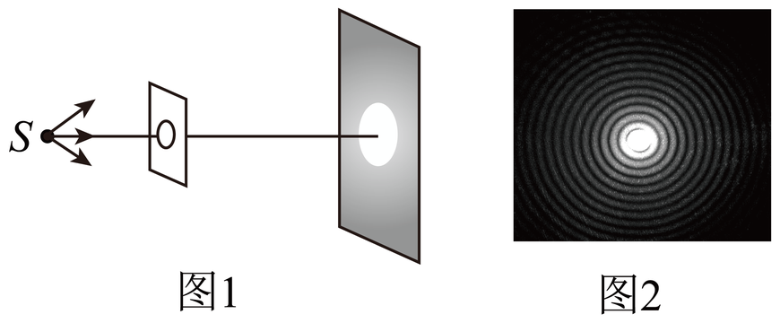
此实验说明了光沿直线传播
圆孔变小，衍射图样的范围反而变大
圆孔变小，中央亮斑和亮纹的亮度反而变大
用不同波长的光做实验，衍射图样完全相同
利用图
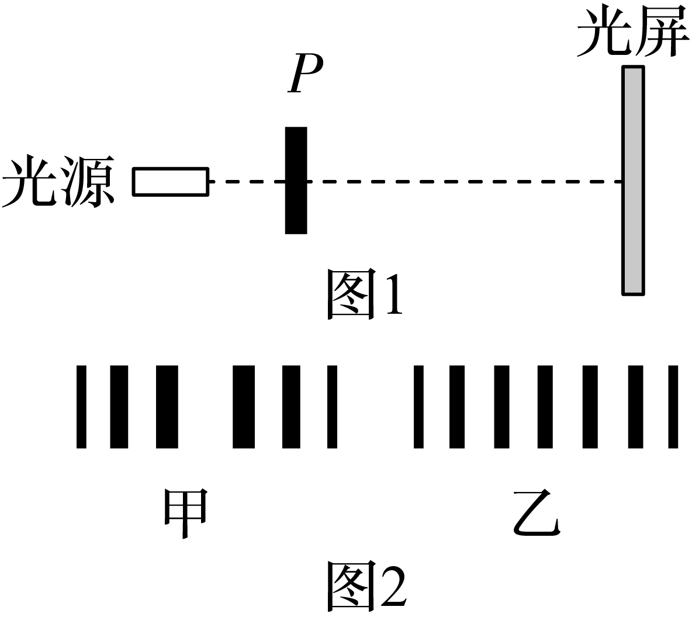
甲对应单缝，乙对应双缝
甲对应双缝，乙对应单缝
都是单缝，甲对应的缝宽较大
都是双缝，甲对应的双缝间距较大
一束激光照在一个很小的圆盘上，在远处的光屏上观察到如图所示的图样，在影的中心有一个亮斑，即著名的“泊松亮斑”。下列说法正确的是（ ）
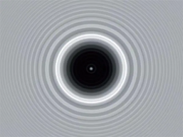
使用蓝牙耳机可以接听手机来电，蓝牙通信的电磁波波段为
是蓝光
波长比可见光短
比可见光更容易发生衍射现象
在真空中的传播速度比可见光小
图甲、图乙分别为研究光现象的两个实验，下列说法正确的是（ ）
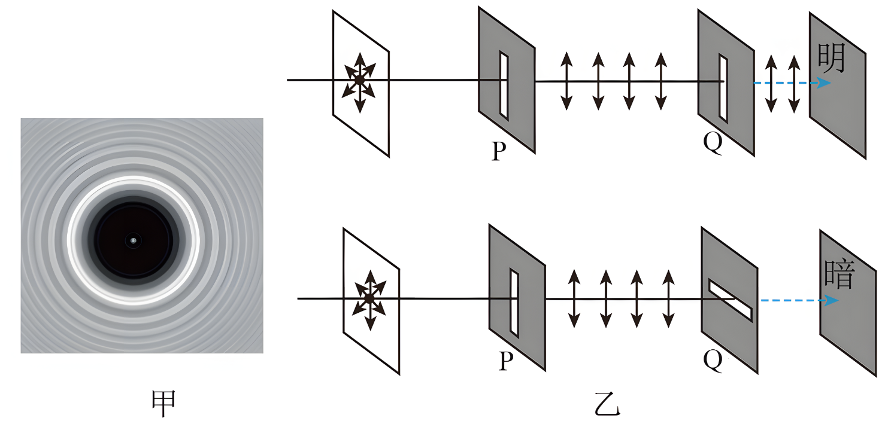
下列有关光的现象中，能说明光是横波的是
泊松亮斑
阳光下的油膜呈现彩色
光的偏振
太阳光经过三棱镜呈现彩色
如图所示，白炽灯的右侧依次平行放置偏振片P和Q，A点位于P、Q之间，B点位于Q右侧。旋转偏振片P， A、B 两点光的强度变化情况是：（ ）
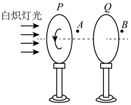
如图所示、让太阳光（自然光）依次通过偏振片P和Q，并以光的传播方向为轴旋转P或Q，下列说法正确的是（ ）
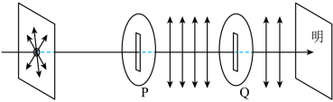
对如图所示的图片、示意图或实验装置，下列判断准确无误的是（ ）
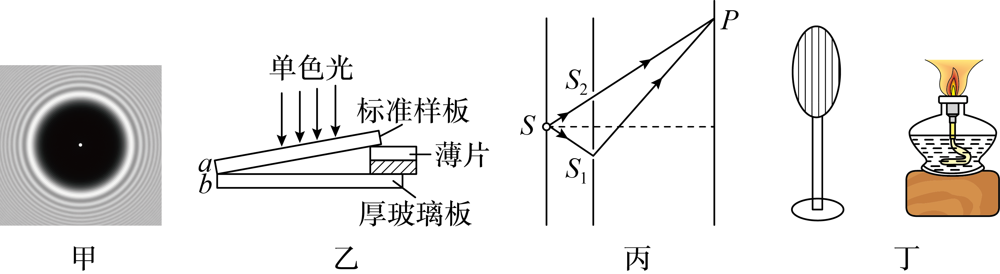
甲图是小孔衍射的图样，也被称为“泊松亮斑”
乙图是薄膜干涉的应用，用来检测平面的平整程度
丙图是双缝干涉原理图，若
生活中有很多有趣的光学现象，关于这些现象，下列表述中错误的一项是（ ）
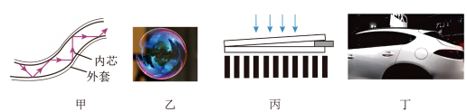
1966年华裔科学家高锟博士提出一个理论：直径仅几微米的玻璃纤维就可以用来做为光的波导来传输大量信息，43年后高锟因此获得2009年诺贝尔物理学奖，他被誉为“光纤通讯之父”。以下哪个实验或现象的原理和光导纤维是相同的（ ）
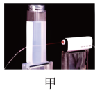
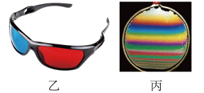
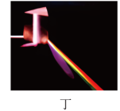
片片雪花洋洋洒洒从天而降，摄影师透过微距镜头，将雪花美丽而梦幻的瞬间留存下来。如图所示，利用微距相机可以拍摄到形状各异的雪花图像，图像中有一种彩色雪花，该雪花内部有一夹着空气的薄冰层，使其呈彩色花纹。下列情景中与雪花呈彩色花纹原理相同的是（ ）
图1是研究光的干涉现象的装置示意图，在光屏P上观察到的图样如图2所示。为了减小条纹间的距离，下列做法正确的是（ ）
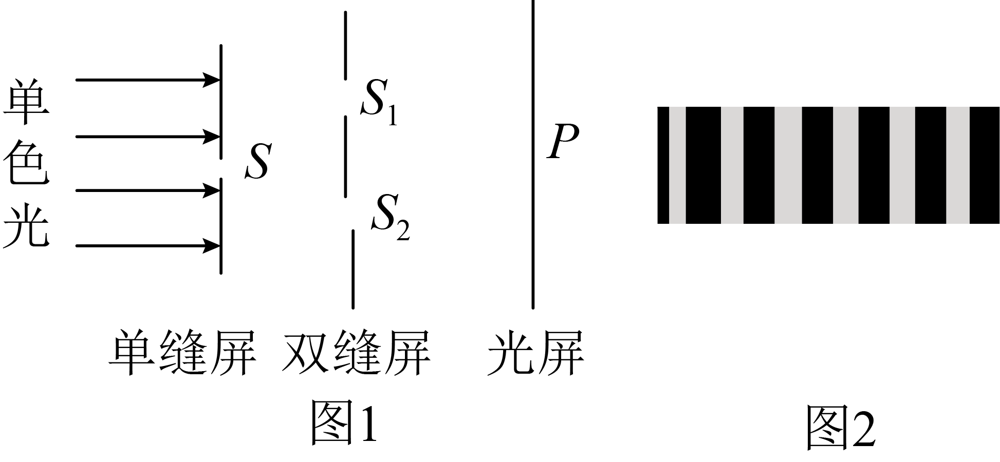
劈尖干涉是一种薄膜干涉，将一块平板玻璃放置在另一平板玻璃之上，在一端夹入一薄片，从而在两玻璃表面之间形成一个劈形空气薄膜．当光从上方入射后，可观察到如图所示的干涉条纹，若将薄片向左移动，则（ ）
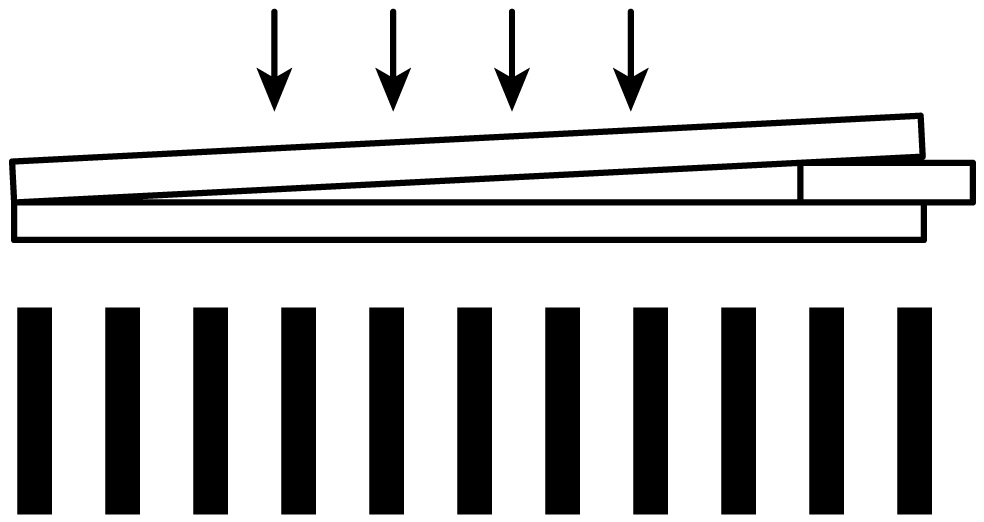
条纹变密
条纹疏密不变
条纹变疏
条纹整体向右平移
如图所示为“泊松亮斑”图样，这种现象属于光的（ ）
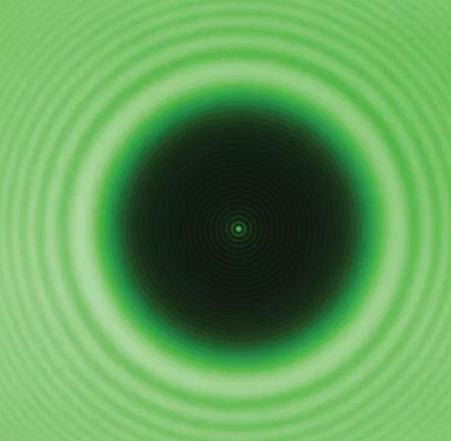
阳光下的肥皂膜呈现彩色条纹，下列说法正确的是（ ）
关于光现象，下列说法正确的是（ ）
为了增加光的透射，通常在摄像机的镜头表面镀一层特定厚度的薄膜，这是利用了光的干涉
光照射到不透明圆盘后，在圆盘阴影中心出现一个亮斑，这是光的偏振现象
在观看立体电影时，观众要戴上特制的眼镜，银幕上的图像才清晰，这副眼镜利用了光的全反射
用光导纤维传输载有声音、图像以及各种数字信号的信息，这是利用了光的衍射
两束光线分别照射到同一双缝干涉装置，得到的干涉图样如图所示，则（ ）
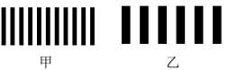
如图所示是研究光的双缝干涉示意图，挡板上有两条狭缝
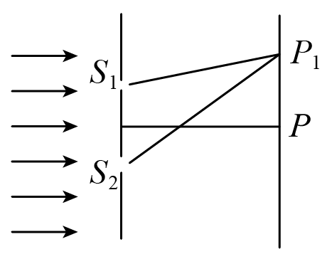
4号亮纹
4号暗纹
6号亮纹
6号暗纹
观察双缝干涉图样的实验装置如图所示，用绿色滤光片时从目镜中可以看到绿色的干涉条纹，在其他条件不变的情况下，下列操作可以使条纹的间距变大的是（ ）
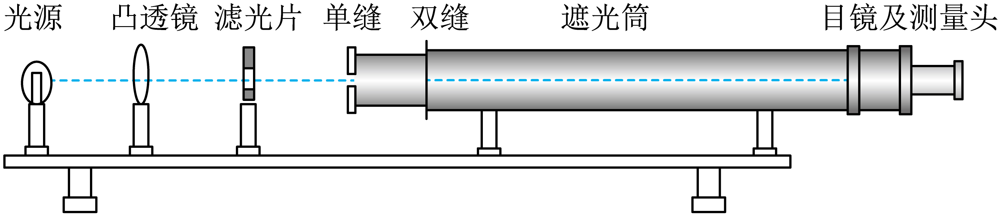
如图所示，在“用双缝干涉测光的波长”实验中，某同学用黄色滤光片时得到一个干涉图样，为了使干涉条纹的间距变宽，只进行一步操作，下列可以采取的方法是（ ）
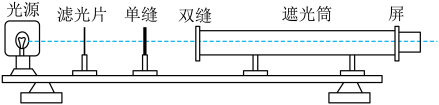
下列现象中可以用薄膜干涉来解释的是( )
雨后的彩虹
水面上的油膜在阳光照射下呈彩色
透过昆虫的翅膀看阳光呈显彩色
荷叶上的水珠在阳光下晶莹透亮
如图所示，把一个凸透镜压在一块平面玻璃上，在透镜的下表面和平面玻璃的上表面之间形成一个很薄的狭缝层。单色光从上方垂直凸透镜的上表面射向凸透镜，沿光的入射方向看到明暗相间的干涉条纹，这些条纹叫作牛顿环。下列说法正确的是（ ）
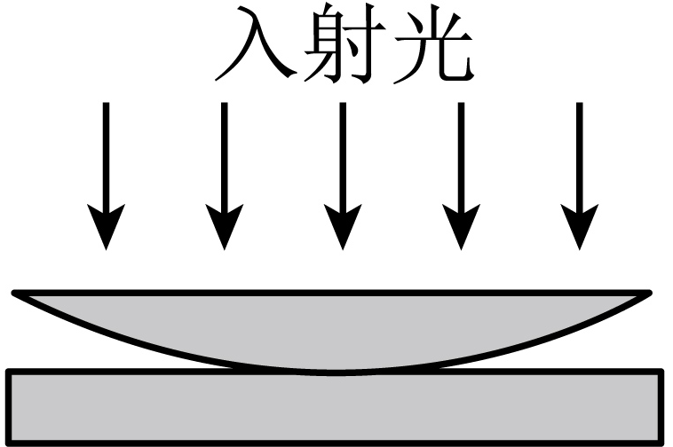
如图甲所示，让一单色点光源S发出的光照射大小可调的圆孔，圆孔后面放一光屏，从大到小调节圆孔大小，在屏上得到的衍射图样如图乙所示，实验发现，光绕过孔的边缘，传播到了相当大的范围。下列说法正确的是（ ）
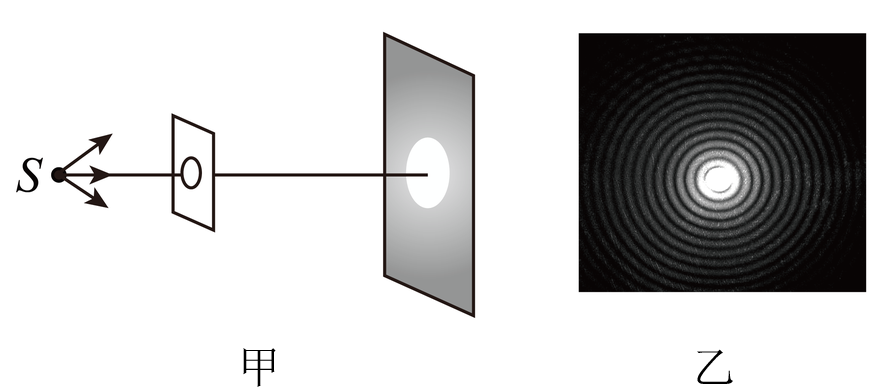
如图所示，自然光经过A、B两个偏振片呈现在光屏上，若偏振片B绕圆心转动，转动周期为T
，则光屏上两个光强最小的时间间隔为（ ）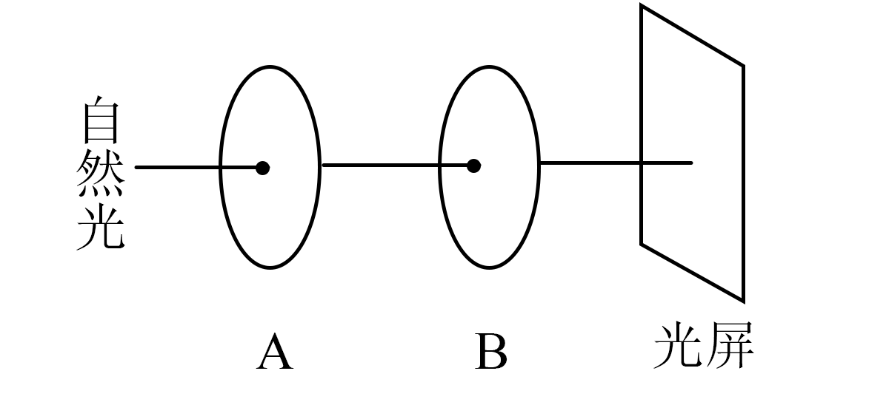
关于光的干涉，衍射和偏振的应用，下列说法不正确的是（ ）
下列关于光的说法正确的是（ ）
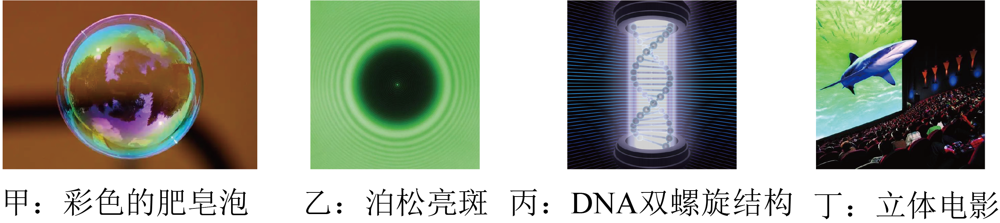
关于光现象及应用，下列说法正确的是（ ）
下列说法中正确的是（ ）
下载设置
![]()